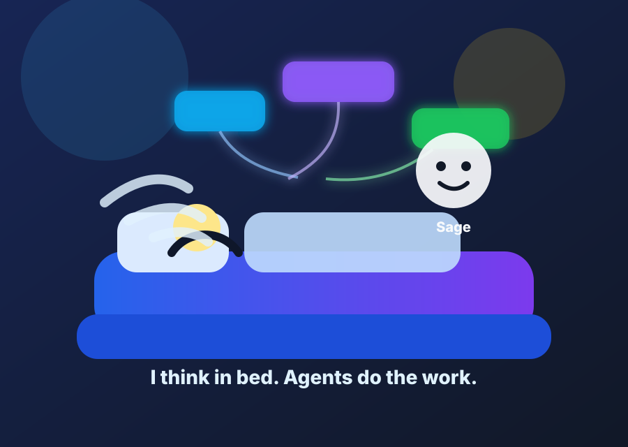
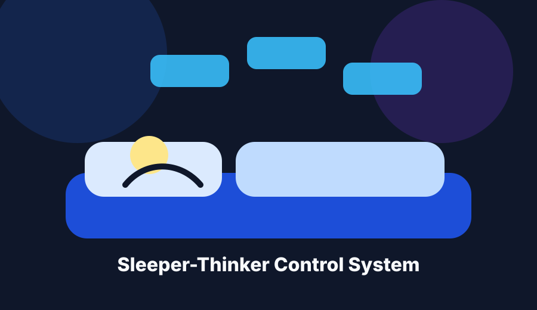
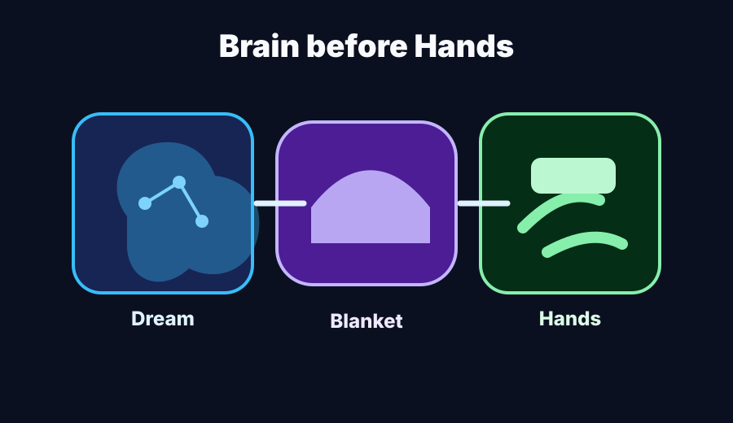

文档协议形态
Book of Sloth、Sage 协议、action manifest、Blanket 风险闸门与 Pillow Note 短报。
Design Version D0.1 · Book of Sloth / Sage
bedagent 是给“没有手脚的思想者”准备的 Agent 控制系统： 控制层 + 协议 + 角色系统，把床上的碎片想法变成安全行动。

What is bedagent?
Book of Sloth、Sage 协议、action manifest、Blanket 风险闸门与 Pillow Note 短报。
监听文本/语音输入，生成 Sage 判断，调度 worktree 或 sandbox，再输出短汇报。
Sage、Scribe、Blanket、Hands、Audit、Voice Adapter 和 Sandbox Adapter 协作。
First Principle
懒不是判断豁免，而是交互原则：少动手、少废话、少分叉。 让人少做机器能做的事，但不替人逃避价值判断。
想的时候快，
剪枝要狠，
动手前慢，
执行要稳。
Core Loop
Concept Design



Research Map
Docs